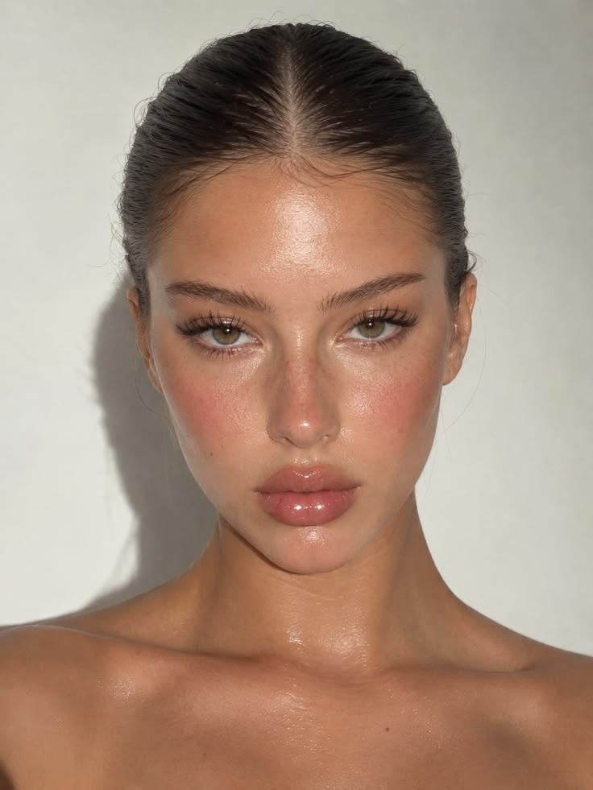
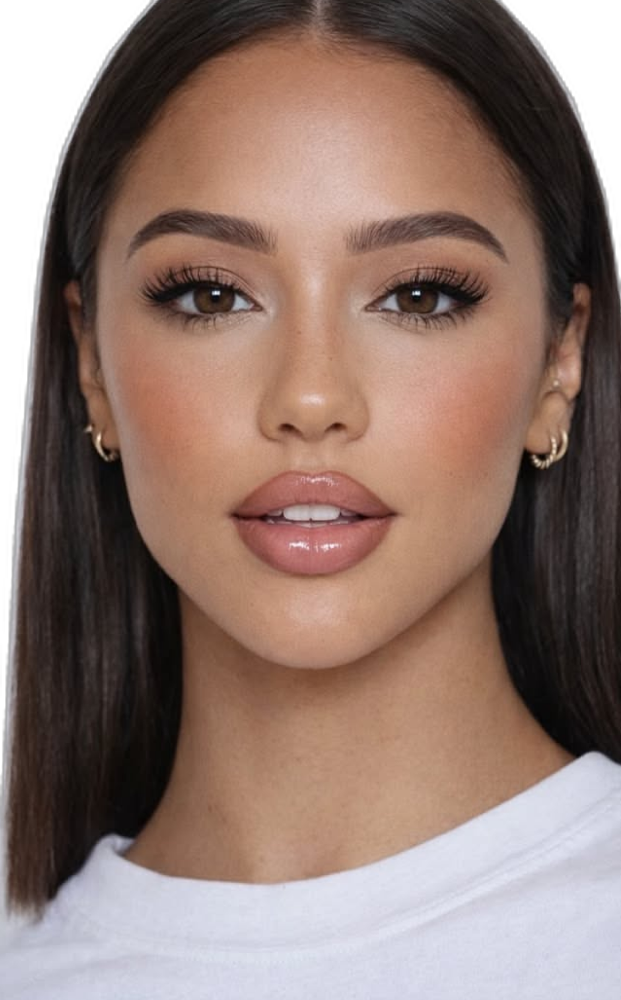
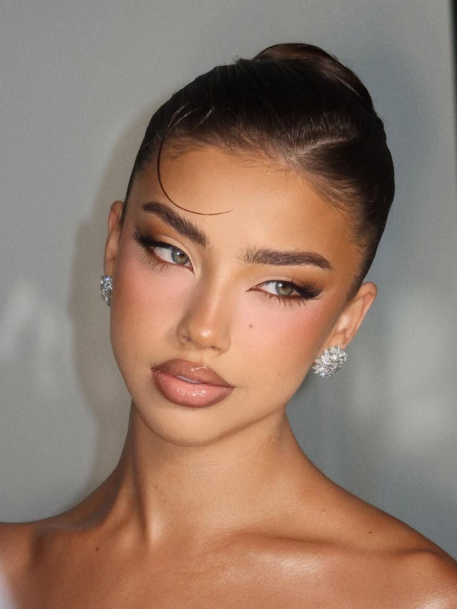
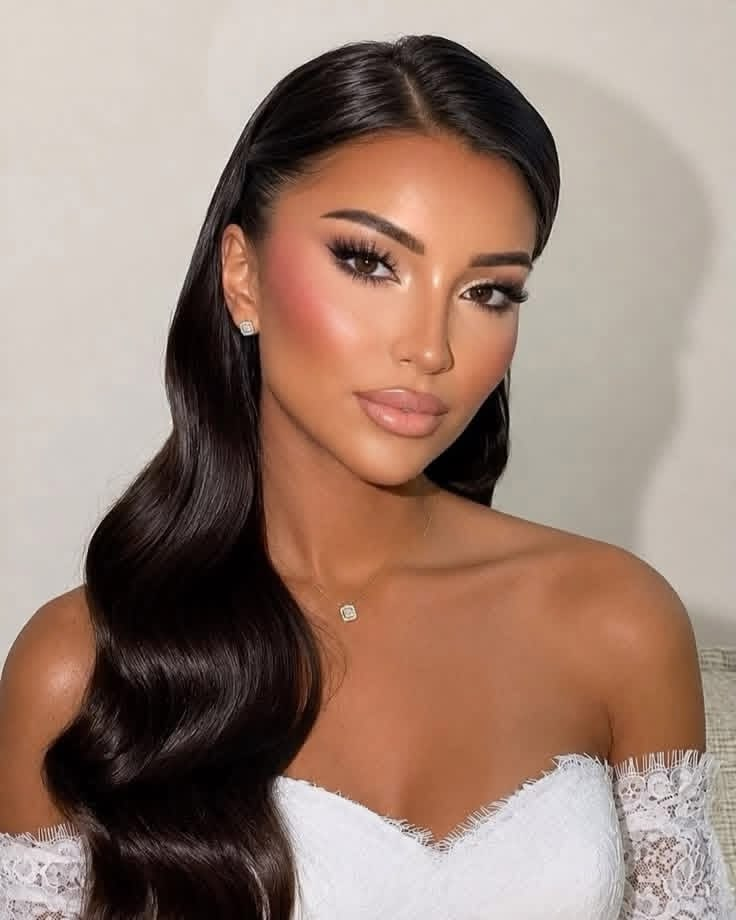
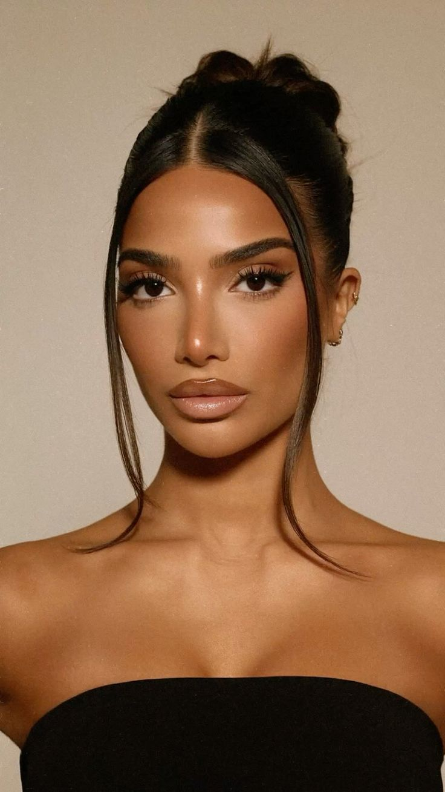
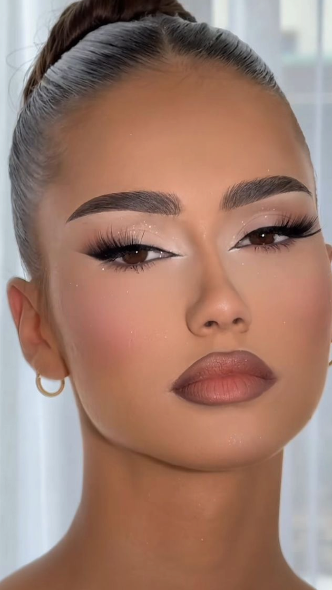

Find Your Perfect Look
Every occasion is different, and so is every person's style. At Nifty Makeup, we offer different makeup looks to match your preferences and special moments. Explore our services and choose the look that suits you.
our Makeup Services
1. Natural Makeup

Natural makeup gives you a fresh and simple look while highlighting your natural features. It uses light coverage, soft colors, and minimal definition. It is a great choice for everyday wear and casual outings.
2. Soft Galm Makeup

Soft glam is a more polished look with softly defined eyes, blended eyeshadow, and a smooth finish. It adds a little more definition while keeping the overall appearance elegant and balanced. It is suitable for birthdays, dinners, and parties.
3. Full Glam Makeup

Full glam is for those who love a more dramatic and noticeable makeup look. It may include fuller coverage, defined contour, bold eyeshadow, eyeliner, and lashes. It is perfect for special events and celebrations.
4. Bridal Makeup

Bridal makeup is designed to help brides feel beautiful and confident on their wedding day. We take time to understand the bride's preferred style and create a look that complements her features, outfit, and occasion.
5. Gratuation And Event Makeup

Whether you are celebrating graduation, attending a birthday, or going to a special event, we create a polished look that suits the occasion and your personal style.
6.Photoshoot Makeup

Photoshoot makeup is designed to look good in pictures while highlighting your best features. We adjust the makeup to suit the type of photoshoot and the look you want to achieve.
Compare Our Makeup Services
Not sure which service to choose? Here is a quick guide to help you find the right makeup look for your occasion.
| Makeup services | What To Expect | Best For |
|---|---|---|
| Natural makeup | Light,fresh,and simple look | Everyday wear and casual outings |
| soft glam | Softly defined eyes and a polished finish | Birthdays, dinners, and parties |
| Full Glam | Bold eyes,defined features,and more dramatic finish | Special events and celebrations |
| Bridal Makeup | A carefully planned look for the weeding day | Brides |
| Gratuation And Event Makeup | A polished look that suits the event | Different Events |
| Photoshoot Makeup | Makeup designed to look good in photographs | Personal and professional photoshoots |
Why choose Nifty Makeup
We want you to enjoy your makeup experience from beginning to end. We take time to understand the look you want, use clean makeup tools, and do our best to make every client feel comfortable and happy with the final result. We also believe that looking good should not have to cost too much.
Ready To Book Your Appointment
Have an occasion coming up? Choose your favorite look and book an appointment with Nifty Makeup.
Book Your Appointment